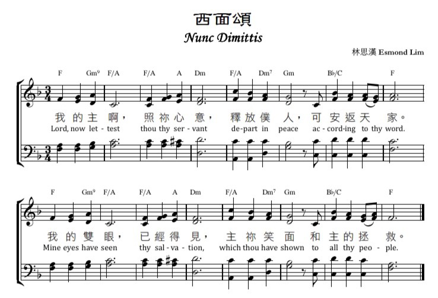

|
詩集：頌主聖詩，547 |
||||||||||
|
1 Now may your servant, Lord,
2 O Lord, you did prepare
|
主，保守前路遠憂傷，並引導脫離黑暗鄉， 主，你看顧永不止息；直到我們永享安息。 釋放僕人穴然去世，我眼已見你救世光， 是照亮外邦人的光，又是以色列的榮耀。 稱頌聖父、聖子、聖靈，祂用聖行、聖言證明； 愛那在死中掙扎者，復活生命我今得著。 |
||||||||||
|

|
|||||||||||
| 簡介 Now may your servant, Lord |
|
Recorded in Luke 2:29-32, Simeon's song is the final (fourth) "great" canticle in Luke 1-2.This song of joy and peace is part of the gospel account of the presentation of Jesus in the temple, involving first Simeon and then Anna (w. 21-40), who express thanks that salvation in Christ is for Jew and Gentile alike. Simeon's song is often called the Nunc Dimittis, after its incipit in Latin. Dewey Westra (PHH 98) versified the text in Detroit in 1931 for the 1934 Psalter Hymnal; it was revised slightly for the 1987 edition. The Nunc Dimittis has traditionally been paired with the Magnificat for Vespers or evening services and is still sung daily in churches with a tradition of daily prayer services (see 247 for more information on this tradition). John Calvin used it at the end of the Lord's Supper. In the Scottish Kirk, if communion was served at both services, Psalm 103 would be used at the end of the morning Lord's Supper and the Song of Simeon at the end of the afternoon or evening Lord's Supper. |
|
詩集：頌主聖詩，547 |
||||||||||
|
1 Now may your servant, Lord,
2 O Lord, you did prepare
|
主，保守前路遠憂傷，並引導脫離黑暗鄉， 主，你看顧永不止息；直到我們永享安息。 釋放僕人穴然去世，我眼已見你救世光， 是照亮外邦人的光，又是以色列的榮耀。 稱頌聖父、聖子、聖靈，祂用聖行、聖言證明； 愛那在死中掙扎者，復活生命我今得著。 |
||||||||||
|

|
|||||||||||
踏入將臨期，和你分享一首和基督誕生有關的詩歌－《西面頌》。在聖詩學上，西面頌(Nunc Dimittis)和撒迦利亞頌、榮耀頌、尊主頌齊名，屬於路加福音的四大頌歌。 請你感受這首由林思漢傳道創作的粵語聖詩頌歌作品，也歡迎你在下周三聖誕聖詩頌唱會中，與我們一同唱頌聖誕頌歌！
https://medium.com/@esmond07/%E8%A5%BF%E9%9D%A2%E9%A0%8C-bb2218d3cbe6
《西面頌》介紹
林思漢
https://youtu.be/j-KmsBDL2Jc
新約聖經比較明顯為詩歌體栽的，有路加福音當中的四大頌歌：
尊主頌（Magnificat）、
感恩頌／以色列頌（Benedictus）或稱為撒迦利亞之歌（路1:67–79）、
榮耀頌（Gloria in Excelsis）或稱為天使之歌（路2:14）和
西面頌（Nunc Dimittis）（路2:29~32）；
另外，還有腓立比書的的
基督之歌（腓2:5–9）、
啟示錄的羔羊之歌（啟4:8–11）及
新歌（啟5:9–13）等等。
一般相信，早期教會已有在崇拜當中頌唱這些詩歌／經文的傳統，藉唱頌這些詩歌來敬拜上主。信徒透過唱頌，可以進入經文的世界、聖經人物的生命，從而讓經文的信息內化，塑造靈性。我相信，信徒的生命故事，就是與聖經及自身處境互動的故事。
《西面頌》，就是引用路加福音的頌歌──西面頌（Nunc Dimittis）的經文。主角西面相信是大家很熟悉的人物，在聖誕時節一定有聽過。路加福音作者描述老人家西面又公義又虔誠，而他的人生目標，就是「見主一面」。西面親手抱起耶穌，親身見證聖子基督降臨，然後唱出西面頌（路加福音2:28–35）來表達出「見到基督，死而無撼」的心情。
或許一些還年輕一弟兄姊妹，還在憧憬將要為主「做大事」，而年長一點的弟兄姊妹或許已然唏噓，感嘆「我仲可以為主做咩呢？」但是，西面的故事勉勵我們，原來「人生目標」不一定是「驚天動地」，而是可以只望日夕在主的殿中，公義、虔誠地忠心等待見主一面。問題反而是，我們的一言一行，令我們將來「有冇面見耶穌」。
「主啊，如今可以照你的話，容你的僕人安然去世；因為我的眼睛已經看見你的救恩，就是你在萬民面前所預備的：是啟示外邦人的光，是你民以色列的榮耀。」（路2:29–32）
讓我們同唱《西面頌》，學習西面的甘於淡泊，「又公義又虔誠」地等待基督再臨。
Scripture References:
st. 1 = Luke 2:29-30
st. 2 = Luke 2:31-32
Recorded in Luke 2:29-32, Simeon's song is the final (fourth) "great" canticle in Luke 1-2 (see also 212, 213, and 214). This song of joy and peace is part of the gospel account of the presentation of Jesus in the temple, involving first Simeon and then Anna (w. 21-40), who express thanks that salvation in Christ is for Jew and Gentile alike. Simeon's song is often called the Nunc Dimittis, after its incipit in Latin. Dewey Westra (PHH 98) versified the text in Detroit in 1931 for the 1934 Psalter Hymnal; it was revised slightly for the 1987 edition.
The Nunc Dimittis has traditionally been paired with the Magnificat for Vespers or evening services and is still sung daily in churches with a tradition of daily prayer services (see 247 for more information on this tradition). John Calvin used it at the end of the Lord's Supper. In the Scottish Kirk, if communion was served at both services, Psalm 103 would be used at the end of the morning Lord's Supper and the Song of Simeon at the end of the afternoon or evening Lord's Supper.
Liturgical Use:
Suitable as a hymn for dismissal, especially after the Lord's Supper, and
during Epiphany, since it brings to focus the worldwide character and task
of the church. Also appropriate for funerals.
--Psalter Hymnal Handbook, 1988
Louis Bourgeois (PHH 3) composed NUNC DIMITTIS for the Song of Simeon; the tune was first published in the 1547 edition of the Genevan Psalter.
Claude Goudimel (PHH 6) wrote the harmonization in 1564 with the melody originally in the tenor voice. Some Christian denominations associate this tune with the ancient Greek "Candlelight Hymn," which begins with the words "O gladsome Light, O grace" in the translation by Matthew Bridges (PHH 410).

https://sq.zhsw.org/wapbk/index.php?doc-view-5609
西面颂（NUNC DIMITTIS）
随着基督降世而来的预言，并非出现在基督受割礼的时候（像施洗约翰那样），而是在受割礼后一个月的洁净礼中说出的。根据古老习俗，婴孩须被带往老医师或圣殿的拉比那里接受祝福。大概是在这样的情况下，西面抱着主耶稣念出他的西面颂（路二29-35）。圣经形容西面（Simeon）受了“圣灵”；在犹太人的传统中，这是相当于“预言的灵”。根据拉比们的说法，自从先知玛拉基后，这灵离开了以色列，这灵再回来，就显示弥赛亚年代来临了（参
SB 论及这课题的地方）。在西面身上，“圣灵的作为”特见于三方面：
1. 西面得到神的启示，确信自己将看见上主的弥赛亚；
2. 循着圣灵的引导（参：启一10），他得以遇见耶稣，并认出耶稣是弥赛亚（参：撒上十六6起）；
3. 他作出祈祷及预言。从路加的上下文看来，西面的话显然被视为先知的预言。
西面颂可分为两部分，第一部分是向神的祈祷（从礼仪角度而言，仅这一部分被称为“西面颂”），第二部分是西面向马利亚所作的预言。这两部分的语调及主题形成强烈对比。祈祷那部分是充满喜乐的，他以最尊崇的语调表达了犹太教对弥赛亚的盼望：外邦人藉着弥赛亚接受神的真理；因此，在祂身上，以色列作为神启示及拯救的工具所享有的荣耀将完全彰显出来（参：赛四十九6；徒一8；罗十五8起）。但西面似乎要在第二部分抗衡祈祷部分予人的感受，因此，称颂被警告取代了。弥赛亚将引起分裂，祂自己也将被人弃绝（参：罗九33）。
在西面向马利亚所作的预言中，出现了受苦的弥赛亚的概念。以色列最终的前景是光荣的，但却不是没有矛盾和冲突的。耶稣成为以色列得拯救的记号或指标，却要被攻击及弃绝（参：路十一30），因为祂所代表的那种救赎不会受所有人欢迎。虽然这事实将令马利亚痛苦，但这种救赎也会引导世人自己作出决定，于是，他们的真我、那隐藏的自我才得以显露出来。（*撒迦利亚颂，以色列颂）
参考资料《新圣经词典》
https://en.wikipedia.org/wiki/Nunc_dimittis
The Nunc dimittis[1] (/nʊŋk dɪˈmɪtɪs/), also known as the Song of Simeon or the Canticle of Simeon, is a canticle taken from the second chapter of the Gospel of Luke, verses 29 through 32. Its Latin name comes from its incipit, the opening words, of the Vulgate translation of the passage, meaning "Now let depart".[2] Since the 4th century it has been used in services of evening worship such as Compline, Vespers, and Evensong.[3]
The title is formed from the opening words in the Latin Vulgate, "Nunc dimittis servum tuum, Domine" ("Now thou dost dismiss thy servant, O Lord"). Although brief, the canticle abounds in Old Testament allusions. For example, "Because my eyes have seen thy salvation" alludes to Isaiah 52:10.[4]
According to the narrative in Luke 2:25-32, Simeon was a devout Jew who had been promised by the Holy Spirit that he would not die until he had seen the Messiah. When Mary and Joseph brought the baby Jesus to the Temple in Jerusalem for the ceremony of redemption of the firstborn son (after the time of Mary's purification: at least 40 days after the birth, and thus distinct from the circumcision), Simeon was there, and he took Jesus into his arms and uttered words rendered variously as follows:
The "Nunc dimittis" passage in the original Koiné Greek:
Transliterated:
Latin (Vulgate):
English (Translation of the Vulgate):
English (Book of Common Prayer, 1662):
English (Roman Breviary):
The King James Version (1611) contains the same text as the Book of Common Prayer, except for the last line (Luke 2:32), which simply reads "A light to lighten the Gentiles, and the glory of thy people Israel."
Church Slavonic (in Slavonic)[5]
The Nunc Dimittis is the traditional 'Gospel Canticle' of Night Prayer (Compline), just as Benedictus and Magnificat are the traditional Gospel Canticles of Morning Prayer and Evening Prayer respectively.[4] Hence the Nunc Dimittis is found in the liturgical night office of many western denominations, including Evening Prayer (or Evensong) in the Anglican Book of Common Prayer of 1662, Compline (A Late Evening Service) in the Anglican Book of Common Prayer of 1928, and the Night Prayer service in the Anglican Common Worship, as well as both the Roman Catholic and Lutheran service of Compline. In eastern tradition the canticle is found in Eastern Orthodox Vespers. One of the most well-known settings in England is a plainchant theme of Thomas Tallis.
Heinrich Schütz wrote at least two settings, one in Musikalische Exequien (1636), the other in Symphoniae sacrae II (1647). The feast day Mariae Reinigung was observed in the Lutheran Church at J.S. Bach's time. He composed several cantatas for the occasion, including Mit Fried und Freud ich fahr dahin, BWV 125, a chorale cantata on Martin Luther's paraphrase of the canticle, and Ich habe genug, BWV 82.
In many Lutheran orders of service the Nunc Dimittis may be sung following the reception of the Eucharist.[6][7] A 1530 rhymed version by Johannes Anglicus, "Im Frieden dein, o Herre mein", with a melody by Wolfgang Dachstein, was written in Strasbourg for that purpose.[8]
Many composers have set the text to music, usually coupled in the Anglican church with the Magnificat, as both the Magnificat and the Nunc dimittis are sung (or said) during the Anglican service of Evening Prayer according to the Book of Common Prayer, 1662, in which the older offices of Vespers (Evening Prayer) and Compline (Night Prayer) were deliberately merged into one service, with both Gospel Canticles employed. In Common Worship, it is listed among "Canticles for Use at Funeral and Memorial Services"[9] Herbert Howells composed 20 settings of it, including Magnificat and Nunc dimittis (Gloucester) (1947) and Magnificat and Nunc dimittis for St Paul's Cathedral (1951). A setting of the Nunc dimittis by Charles Villiers Stanford was sung at the funeral of Margaret Thatcher as the recessional.[10] Stanford wrote many settings of both the Magnificat and Nunc dimittis.[11] Sergei Rachmaninoff wrote a setting of the Slavonic Nunc dimittis text, Ны́не отпуща́еши (Nyne otpushchayeshi), as the fifth movement of his All-Night Vigil. It is known for its final measures, in which the basses sing a descending scale ending on the B♭ below the bass clef.[12]
https://www.baptist.org.hk/mobile/b5_sermon_speak.php?id=1090
經文【路2：25-35】
講員：陳沛偉傳道 記錄：伍狄奇弟兄
今天是普天同慶的日子。二千多年前，嬰孩耶穌謙卑地降生在馬槽裡，天使宣告：「在至高之處榮耀歸與神，在地上平安歸與祂所喜悅的人。」(路2：14)這也是歷世歷代人們共同的願望！耶穌又名叫「以馬內利」，意指神與人同在，要賜福給地上祂所愛的人。
在聖誕節期間，我們都會彼此祝賀「聖誕快樂」，但究竟「快樂」的內涵是甚麼？讓我們藉着一段感人的記載，思想：我們應該擁有怎樣的目光？在聖誕節裡，我們應該看到甚麼而感到歡欣和快樂呢？耶穌基督的誕生對我們今天的生活有甚麼至關重要的意義呢？在四福音裡，只有馬太福音和路加福音記載耶穌基督的誕生。今天讓我分享路加福音獨有的記載：《西面頌》。
路加福音在首兩章有四首優美的頌歌，包括第一章馬利亞的《尊主頌》、《撒迦利亞的頌歌》，第二章天使的《榮耀頌》、《西面頌》。頭三首頌歌較為人熟悉，《尊主頌》既溫馨又歡欣，《榮耀頌》乃普世歡騰的宣告。不過《西面頌》的氣氛明顯不同，路2：29意味着西面快要離世。事實上，《西面頌》這題目的拉丁文"Nunc Dimittis"是「現在讓我離世」的意思，在一些西方教會偶爾也會在安息禮拜中頌唱這首詩歌。但其實這段記載相當豐富，重點也不是傷感的記載，反而是對歡欣另一種很細膩的描述，是一份很深的欣喜。這頌歌也帶出福音很重要的意義，特別有關耶穌基督的降生對外邦人的意義。
一 看見至寶貴的救恩
自從以色列國和猶大國先後被亞述和巴比倫所滅之後，神的子民一直寄人籬下。縱使在波斯帝國統治下，容讓他們返回自己的家鄉，但是他們仍受到欺壓；在主前2世紀，猶太的馬加比家族起義功成，他們有過短暫的自由，不過很快又落入羅馬帝國的統治中。
西面處於被羅馬帝國統治的時代，他深盼以色列的安慰能按着神的應許快快實現。聖經沒有描述西面的年齡，一般相信他年紀老邁，對神忠心，虔守律法，有聖靈在他身上，與神有親密的關係(路2：25-26)。「以色列的安慰」這應許在以賽亞書裡是很重要的主題，尤其在四十章以後多次重複神要安慰祂的百姓。西面「素常的盼望」的堅持就是建基於神話語確切的應許，以及與神很親密的關係中所得到的啟示之上。西面可能等了數十年，甚至是一生之久的時間。在我們的信仰裡，「等待」這功課尤其難學。我們可曾有盼望縈繞心間，揮之不去？雖然我們知道神必看顧我們，但當時間不斷過去，仍然沒有任何動靜，我們仍有西面的信心嗎？仍能素常等候嗎？詩27：13-14勸勉我們要耐心等候耶和華，當壯膽，堅固你的心，因為知道神必然掌管，這是我們從任何一個時代的歷史都可以看見的。
近來靈修看到羅12：19，英文譯本翻得很準確，也很有意思。「聽憑主怒」的翻譯是"Leave room for God’s Wrath"，意思是要給神的忿怒留空間。留空間給神實屬不易，因我們總有各樣的盤算、周詳的計劃，希望自己可以運籌帷幄，所以再沒有太多的屬靈空間去等候神，以致有各樣的掙扎和愁煩。西面經過漫長的等待，當他親手抱着一個多月大的耶穌，那深刻的欣喜實在難以言喻，其他事情都不再重要了。
保羅跟西面有同樣的體會。他寫腓立比書時，已經蒙召20多年，縱然為了福音的緣故受了很多苦楚，但他在牢獄當中仍能宣告，沒有事情可以跟追隨耶穌來相比(腓3：8)；同樣西面在見證了神的救恩臨到之時，他已知道自己一生無憾！我們可有這份情懷、這個態度？當知道，既然我們已經看見並且擁有生命裡最寶貴的寶貝——神給我們的救恩，就不應再被眼前的成敗得失困住，我們該有不一樣的能力去誇勝眼前各樣的困境，面對各樣的挑戰和創傷。人生的種種遺憾和困苦雖真實，卻非壓倒性的(林後4：8-9)。誰會在知曉明天將繼承巨大的遺產，今天仍會為生活而長嗟短歎？「一宿雖然有哭泣，早晨便必歡呼。」(詩30：5)這正是我們屬神子民應有的生命態度和目光。聖誕節提醒我們：生命裡的至寶是甚麼？最值得我們素常盼望的是甚麼？我們心靈裡最深的渴求和滿足又是甚麼呢？我們一生的好處都不在神以外，這是今天第一個提醒我們的目光！
二 看見照亮外邦人的光
路2：29-32是《西面頌》的主要內容，不但表達了西面深深的感恩與歡欣，還道出了十分重要的神學意義。首先西面看見耶穌基督就等如看見救恩，這確立了耶穌基督彌賽亞的身份，並且該救恩是為萬民所預備的。根據使徒行傳，猶太人要等到外邦的百夫長哥尼流一家信主之後，甚至在耶路撒冷會議之後，才更加明白外邦人得救的問題；然而聖靈其實已藉着向西面啟示去宣告：救恩是給萬民的，「萬民」並不是猶太人的萬民，而是包括所有外邦人的萬民。耶穌基督不單是以色列人的榮耀，還是照亮外邦人的光 (路2：32)。
耶穌基督的誕生是要擦亮我們的目光，神的救恩要臨到每一個人身上，不分種族、階級、地域，不獨給我們，也給每一個人，因此我們要細想怎樣把這份恩典分享開去。我們慶祝聖誕時，要記念那些仍然未聽聞福音，甚至落在困苦流離境況的人，他們是圈外的羊。早前在一個社區關懷機構事工介紹的聚會中，有兩張圖片深深震撼了在場人士：第一張圖片看似是教會後門某個地方，有一位長者躺在那裡，而門上的訊息是：「耶穌說：願你們平安」！這張圖片帶着很震撼的呼聲：究竟平安怎樣能夠臨到每個人身上？在當中我們能夠扮演甚麼角色？另一張圖片的背景是在寒冷的晚上，一個身無長物的人只能夠容身於提款機的角落裡，他把鞋子作為枕頭，捉襟見肘！在他們身上可能都有不同的故事，但我們豈可無動於衷呢？
《撒迦利亞的頌歌》有個很美麗的宣告(路1：78-79)：這個清晨的日光不單照在我們身上，還要照在一切坐在黑暗中、死蔭裡的人身上。當我們慶賀聖誕時，如何讓其他人也看到這救恩的真光？讓我們嘗試帶着不一樣的目光，尤其留意身邊的人的需要，心懷善意去面對我們接觸到的人，將聖誕的光彩散發開去。我們可節省一些慶祝聖誕的金錢與時間，與身邊有需要的人分享：可能是我們忽略了的家人、朋友，或在街角的鄰舍。我們嘗試向他們送上一些禮物，一份暖意，跟他們聊天，用些時間把祝福帶給他們。
吳彩虹牧師曾跟我們分享五個活出門徒使命的英文字母：BLESS。這五個英文字母代表甚麼？B ( Begin With Prayer)：當我們接觸其他人，把神的恩典帶出去，首先要為他們祈禱，求神看顧他們，賜他們一顆平安和渴望神的心；L(Listen)：我們願意花時間去聆聽身邊的人的處境和需要嗎？E(Eat)：多跟他們茶聚，具體地建立友誼；S(Serve)：服侍身邊有需要的人，送上具體的幫助，甚至恩慈的施予；S(Story)：分享自己的故事，把神奇妙的作為和自己的見證去跟身邊的人去述說。我們能夠跟他人分享神的祝福，是莫大的恩典和非常快樂的事情！這是今天訊息的第二個目光。盼望我們不只在聖誕節前後有這看見和表現，還能轉化成為我們作為主門徒的生活方式。當我們看見世人在聖誕期間狂歡作樂，但卻不知道或不願意接受福音，實在何等可悲！我們可願意用心將人們帶到神面前，讓救恩的光光照他們冰冷的生命嗎？
三 看見生命改變的盼望
西面給耶穌一家祝福後，隨即向馬利亞發出警告，指出她懷裡的孩子將要受難，作為母親的馬利亞將會心如刀割(路2：34-35)。同時西面更預言神的子民對福音會有兩種不同的反應和結果：有接受福音的，有拒絕福音的；接受福音的人必要興起，厭棄救恩的人必要跌倒。這呼應以賽亞書和詩篇以石頭來預表耶穌基督。耶穌既是寶貴的房角石，也是絆腳石，視乎人是否願意接受福音(羅9：33)。對於不願意接受福音的人來說，耶穌基督不過是毁謗的話柄！「話柄」更好的翻譯是「標記」。耶穌基督本是「救恩的標記」，但在不信的人，耶穌基督卻成為他們「毁謗的標記」，何等可惜！當人不願意接受福音，心裡的惡念也很自然地顯露出來。
在聖誕節期間，人們常常提到耶穌基督是我們最寶貴的禮物，但要留意經文提醒我們耶穌到來不但叫許多人興起，而且同時要叫許多人跌倒。耶穌到來是要作我們生命的王、生命的主；只有願意接納耶穌，承認祂是我們生命的主，開放我們的生命給祂改變的人，方可得到這份最珍貴的禮物；否則耶穌基督到來，並不是福音，只是「禍音」，是帶着永刑的審判。耶穌基督降生，是要真正信靠祂的人得救(約3：16)。
我們信主的經歷雖各有不同，有的在傷痛裡得到安慰，有的在困難中得到幫助，有的在順境時經歷神很多不同的恩典，但耶穌基督對信靠祂的人所作的呼召從來都是：「來！跟從我！」真正接受耶穌基督的人，必會做耶穌基督叫他們做的事，必然會活出耶穌基督叫他們活出的生命，願意生命被神改變！我們的信仰並不是苦差，而是十分寶貴的盼望，我們只要跟着做，我們的生命就有轉機，就能夠興起。耶穌基督到來，是要尋找拯救失喪的人。我們的盼望是無論我們的生命如何破碎，也可得到痊癒；無論生命中的黑暗有多大，也能被這真光驅走，問題在於我們是否願意被主改變生命。耶穌問那病了38年的人：「你要痊癒嗎？」(約5：6)弟兄姊妹，我不知道你今年聖誕節的心情怎樣，有沒有仍然背負着各樣的重擔，心靈中充滿莫名的捆鎖。耶穌基督誕生的好消息是，無論你面對的問題有多大，信靠耶穌，認真跟隨祂，我們的生命都能有轉機，都能興起！走這條天路，我們會有疲乏、軟弱的時候。聖經提到三個「到底」常給我激勵:(一)拯救到底(來7:25)；(二)堅固到底(林前1:8)；(三)愛到底(約13：1)。謹記這三個很寶貝的「到底」，我們無論面對甚麼事情，都可以有力量去面對，讓我們的生命能夠再次閃亮，抬起頭來面對明天。我們願意倚靠主，使生命得以更新，得以改變嗎？第三個目光就是看見生命改變的盼望，只要靠着耶穌基督，我們的生命就能夠有出路！
結語
真正快樂的聖誕是怎樣的呢？盼望《西面頌》的訊息能給我們啟發和答案。今年的聖誕，我們會更快樂嗎？我相信一定會！求主幫助我們，更新我們的屬靈目光，讓我們每天能夠帶着喜樂、輕省和歡欣的心去跟隨神、見證神！
https://efcc.org.hk/Articles/view/2874#.YQj2xvkzbIU
路加福音一章46-56節稱為馬利亞的「尊主頌」，英文稱為Magnificat，這個字是由拉丁文來的，而拉丁文則源於希臘文的Magalunei；這個字出現於第46節，意思是「尊為大，極尊崇」(Magnify，highly respect)的意思。
路加福音有四首詩，都為頌讚詩
這四首詩都稱為aineo，即是可以唱來的，其中至著名的要推馬利亞的尊主頌了。我稱之為第一首聖誕詩。這首詩可分為三部份：
(一) 馬利亞之頌歌(v.46-49)
．非常個人性－不是公式化，不是唸台詞，不是背書，而是非常個人性，富有感情。一開始，她便說：「我心尊主為大，我靈以神我的救主為樂。」
心一字希臘文是Ψυχή，也可譯作「靈魂」，是生命之深處，從心發出，並非水過鴨背。而靈一字，希臘文是πνεῦμα，也是心之深處，滿有感情的。
．馬利亞用了兩個字來形容自己
－使女：奴隸、婢女、沒有自主權的
－卑微：甚麼也沒有，無德、無才、無能
神卻不看這些，使用她成就大事，她怎不會極開心，希臘文ἀγαλλιάω一字是指「開心到彈起」、「非常開心」，充滿豐富的感情。
承先啟後的－這詩與舊約撒母耳記上二章1-10節哈拿之歌極相似。當哈拿知道自己懷孕生子，就禱告說：「我的心因耶和華快樂，我的角，因耶和華高舉，我的口向仇敵張開，我因耶和華的救恩而歡欣。」
一如哈拿的禱告，馬利亞的禱告是因耶和華的救恩而歡欣，很明顯這有承先之作用。我們再看看這段聖經，發覺在文法上（特別是時間式tense方面）是非常混亂的；但卻是非常有趣：
v.46我心尊主為大－現在式(present tense)
v.47我靈以我的救主為樂－過去式(aorist tense)
v.48祂顧念使女之卑微－過去式(aorist tense)
v.48從今以後，萬代稱我為有福－將來式(future tense)
路加在這裡所用的「過去式」(aorist tense)是一種所謂ingressive
aorist，意思是說：我如今歌頌主的救恩，只不過是開始而矣，以後萬世萬代的人都會像我一樣去歌頌祂的救恩，英文可簡譯作I have begun to enter
into the praise age。這就猶如一個高明之領唱者，他一開口，整個會眾都進入「唱」的狀態。何解？因為耶穌啟開了一個新的世代！
．這首詩也具有深厚的「末世」意識(eschatological)，甚麼叫做「末世」？原來猶太人把歷史分為二個階段，一是屬世，屬肉體時代，是痛苦，邪惡時代，當彌賽亞降臨，就啟開了一個新的時代稱為「末世」「天國」，也是救恩時代，這意識充滿於馬利亞之歌中，如
v.47樂一字ἀγαλλιάω是指彌賽亞來時之喜樂(eschatological
joy)
v.47救主－耶穌就是那位啟開新時代的救主
v.49那有權的（主）成就了大事（救恩）
總括來說，這是第一首聖誕詩，是充滿頌讚之詞，既是個人性，充滿感情，神學思想也非常豐富，承先啟後，充滿末世意識，絕非一些堆砌文字的作品，無痛呻吟，馬利亞看到這世代之巨變，因耶穌降臨帶來世代之巨變，人類的盼望，我們可以說，這巨變就是耶穌的革命！
（二）耶穌基督的革命(v.50-53)
（三）神與祂的子民(v.54-56)